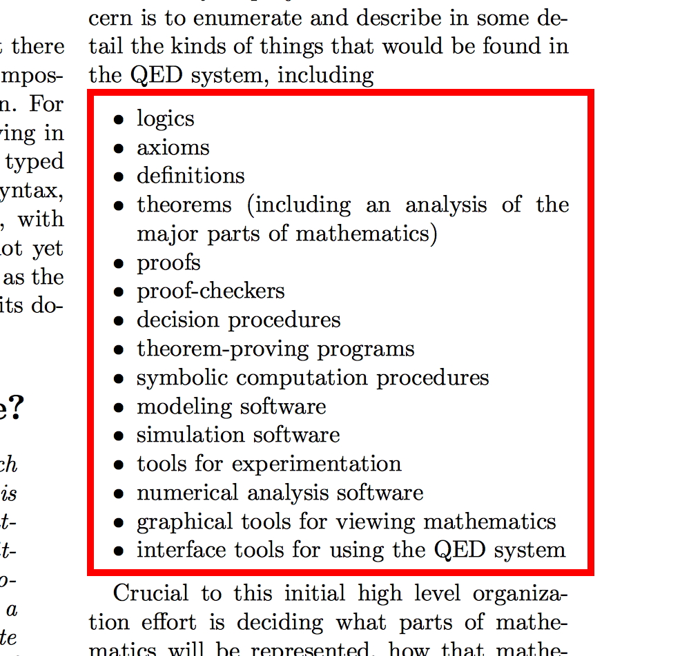

QED and the TPTP World

TPTP World Logics and Languages and Systems
- logics = the TPTP Language (with Arithmetic)
- axioms, definitions, theorems = the TPTP Problem Library
- theorem-proving programs = ATP Systems (with Arithmetic)
- proofs = the TSTP Solution Library (with SZS Ontology)
TPTP World Mathematics
- ... parts of mathematics = in the TPTP Problem Library
- interface tools ... = projects using the TPTP World
TPTP World Services
- proof-checkers = the Semantic Derivation Verifier
- simulation software = Automatic Generation of Interesting Theorems
- graphical tools ... = the Interactive Derivation Viewer
- tools for experimentation = SystemOnTPTP